Organizational AI Memory
Turn individual AI know-how into reviewed, cited organizational capability.
SELLSYSTEMS · Founder Mode Track
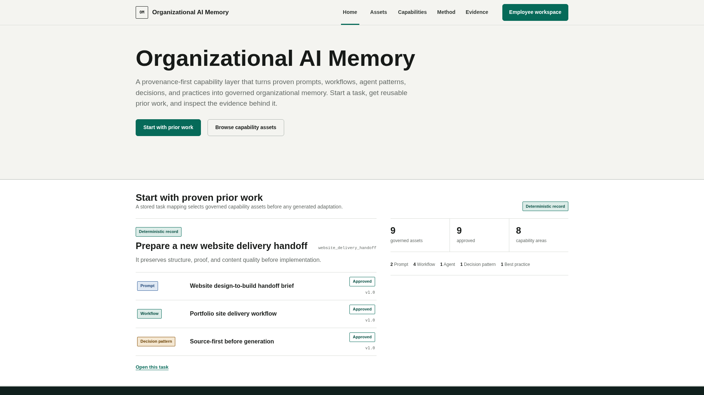
The failure is not storage. It is authority + context.
What is current?
Why did it work?
Who may reuse it?
What changed after review?
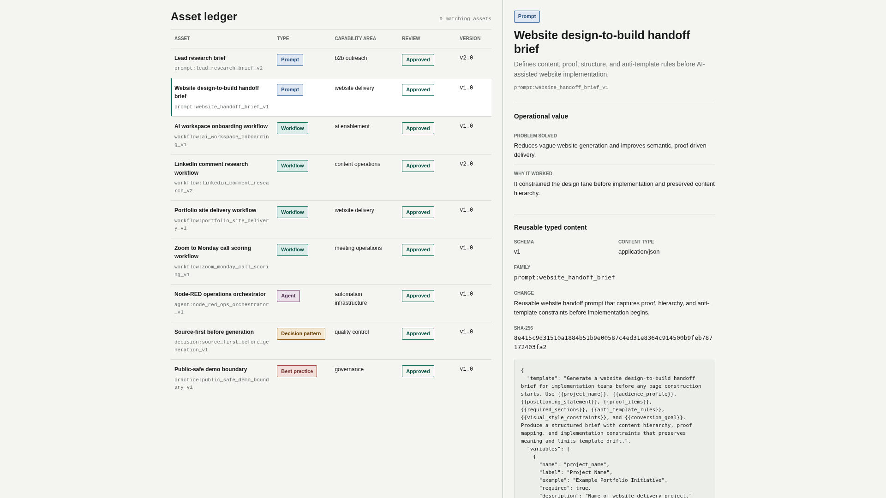
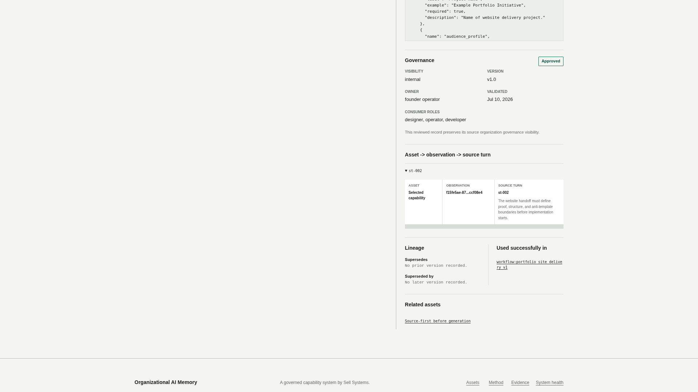
Start with governed memory, then adapt.
The model never selects company truth.
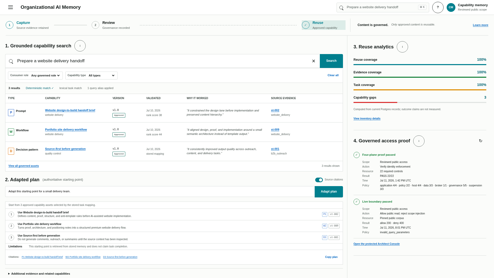
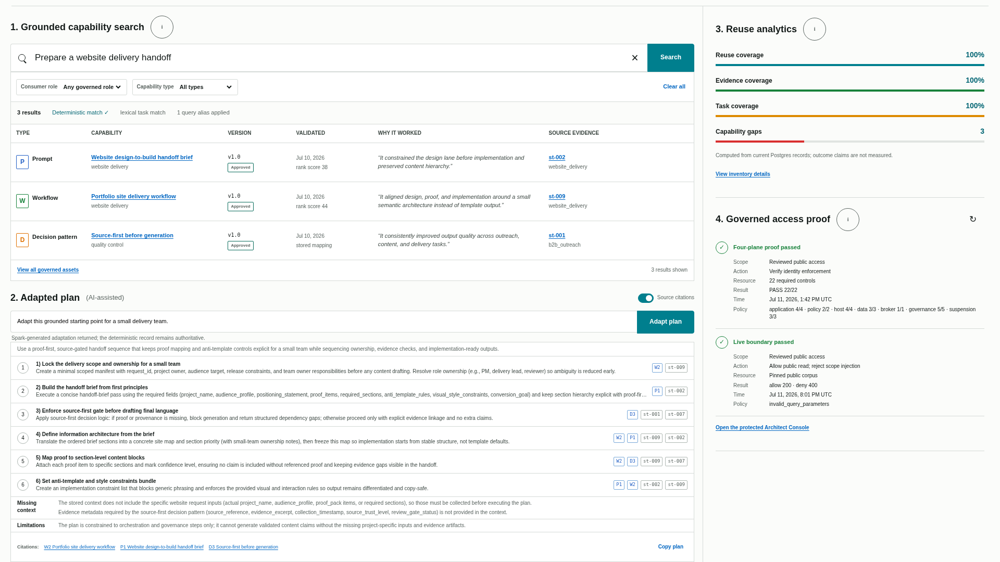
Personal contribution without automatic publication.
Human and linked agent remain distinct principals.
owner-only revision → explicit current-revision consent → brokered cited retrieval → edit resets access
Private by default. Consent applies to exact content, not permanent blanket access.
quarantine → sealed evidence → independent review → architect draft
Separate workflow. No automatic promotion from personal memory and no autonomous canonical write.
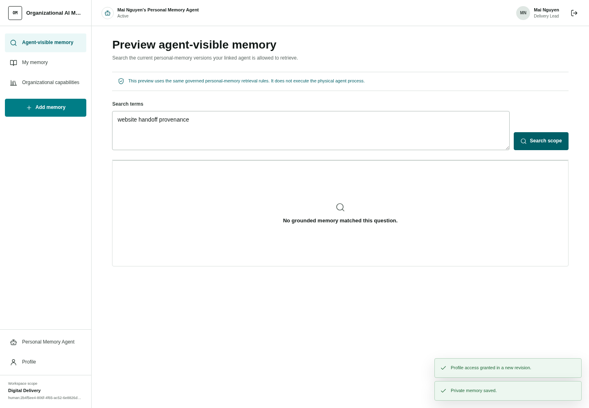
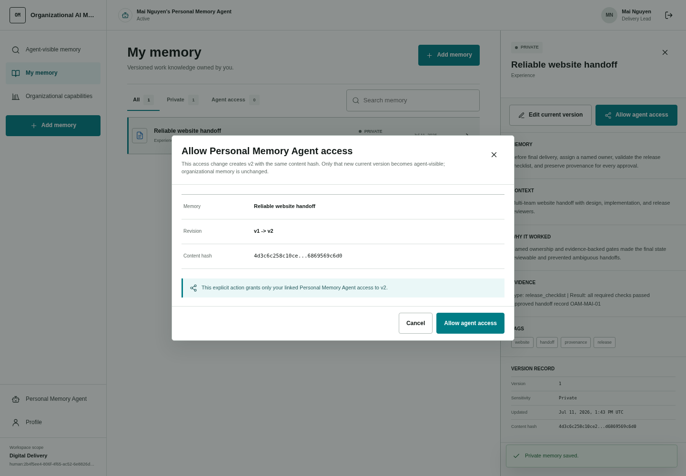
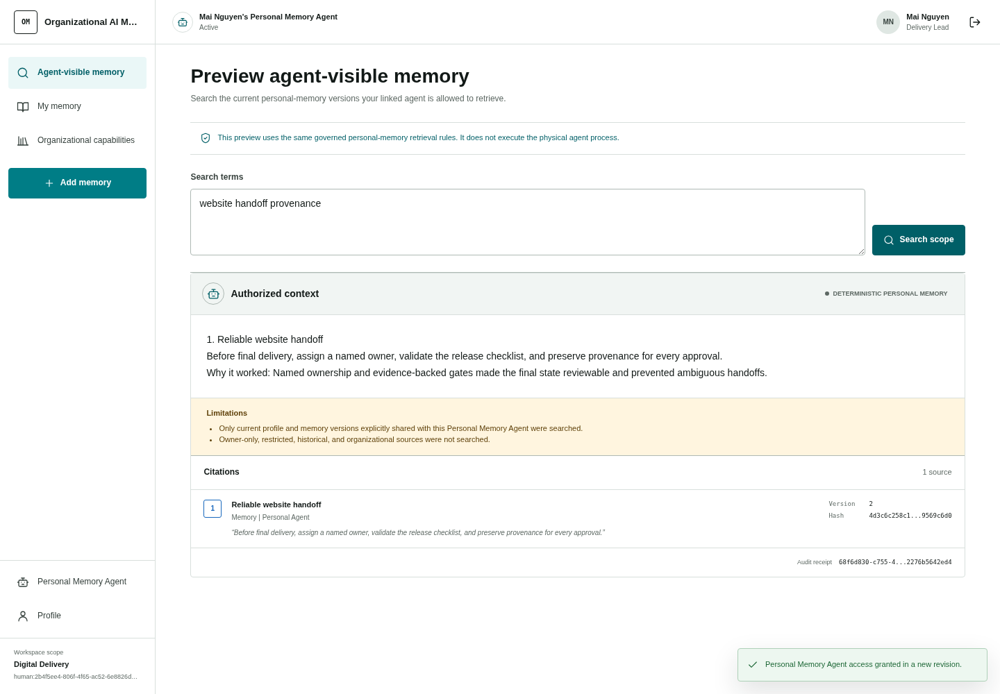
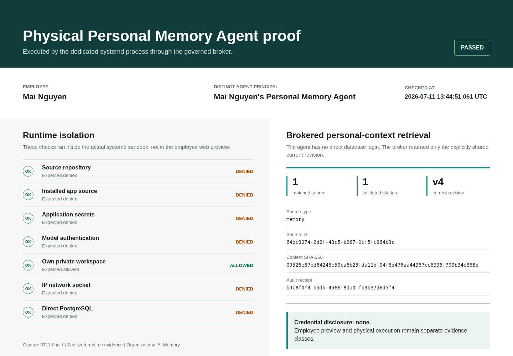
Evidence now. Pilot measures next.
| Observed release evidence | Proposed pilot measures |
|---|---|
| 275API / security tests | approved asset reuse |
| 22build-bound identity controls | recommendation acceptance |
| 35browser checks | review turnaround |
| 7physical-agent checks | denial + revocation success |
Five real-PostgreSQL integration cases are recorded contract evidence, not a fresh live run. No ROI or testimonial is claimed.
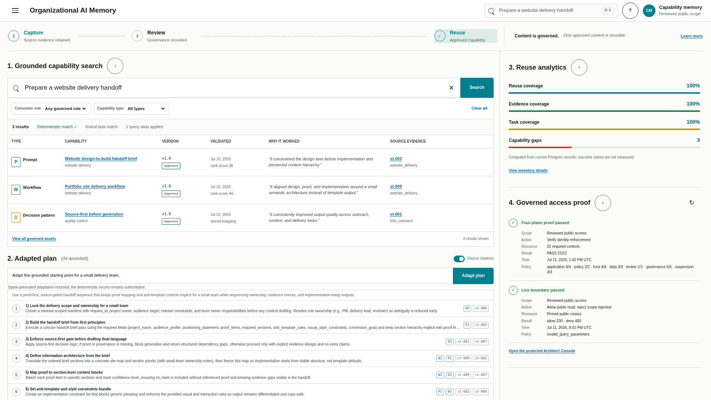
The model can adapt the plan. It cannot decide what the company knows.
When people move on, the organization keeps reviewed capability, not their identity or private memory.
Four enforcement planes
A policy statement becomes real only when every plane agrees.
Human, agent, workload
Distinct principals with explicit ownership and scope.
Department + template
Sponsor ceilings and explicit denials constrain assignment.
Locked Linux agent
Sandboxed service, private workspace, independent broker credential.
FORCE RLS + broker
Fixed views and brokered grants; no direct agent PostgreSQL login.
Claim boundary: the MVP does not claim a Linux or PostgreSQL account per human.
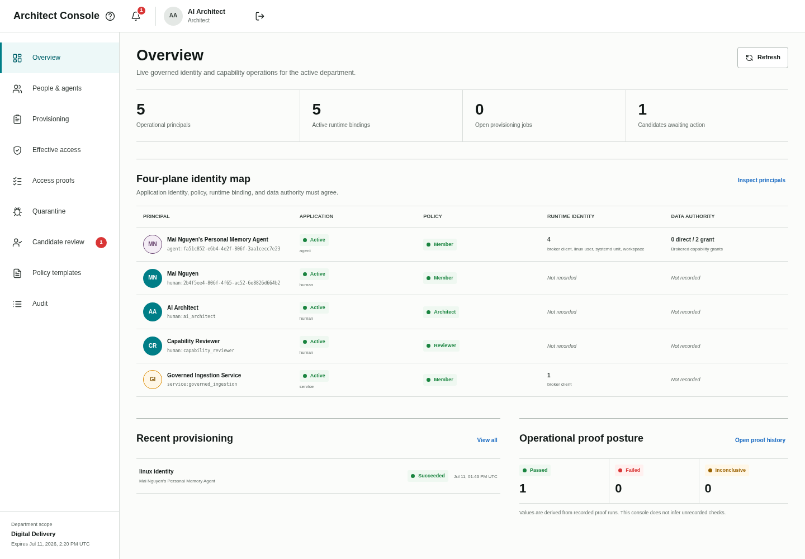
Threat boundary
Proof is scoped to ordinary workloads under trusted administrators.
Trusted: host root + PostgreSQL superuser
Deterministic authority vs. optional Spark
Generation can improve usability without becoming authority.
| Deterministic authority | Optional Spark adaptation |
|---|---|
| Selects approved records | Rewrites within selected records |
| Retains the complete stored plan | Returns strict structured steps |
| Defines allowed asset + source-turn citations | Citations are validated before display |
| Remains available on generation failure | Non-authoritative and rate limited |
Negative or unsupported queries return no match, not plausible invention.
Governance boundary
Candidate creation and canonical publication are intentionally different powers.
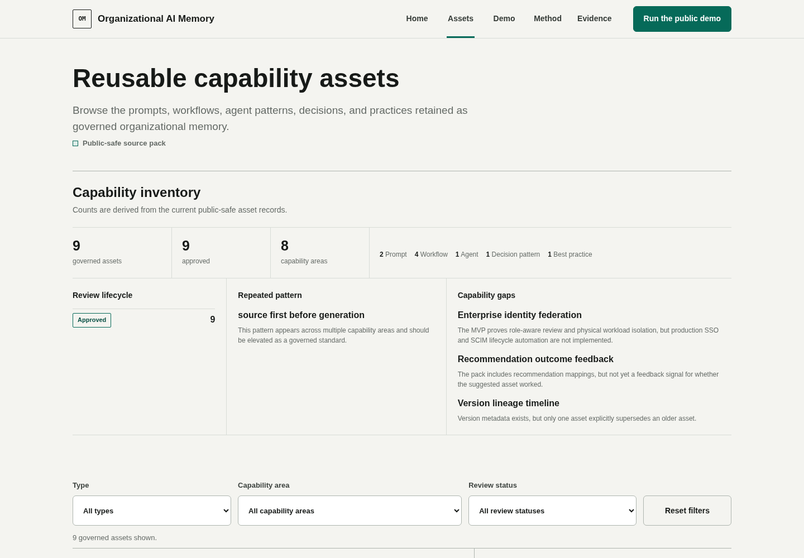
Deployment path + known gaps
A live enforced MVP with explicit next steps, not an invented enterprise finish line.
Next deployment steps
- Enterprise SSO/SCIM replacing root-managed human credential context
- Container-runtime adapters preserving distinct agent identity
- Controlled ingestion connectors
- Acceptance, outcome, and time-series capability analytics
Not claimed today
- Autonomous canonical publication
- Measured ROI or customer testimonials
- Digital twins or employee impersonation
- Autonomous duplicate detection or a complete connector set